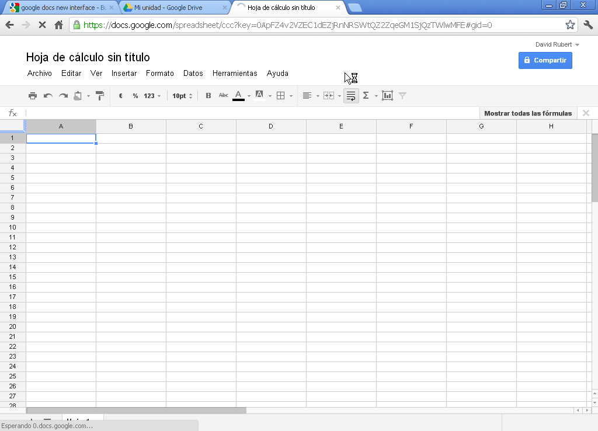
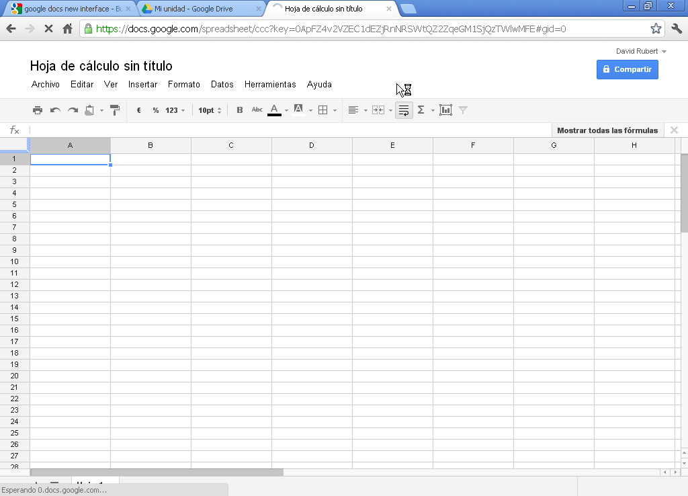

Gestión eficaz del tiempo en el trabajo
calendar
Organización efectiva de nuestras tareas
Apreta la tecla → para avanzar.

Es la aplicación de calendario electrónico de Google, disponible desde el 2006 para los usuarios de GMail y desde el 2011 para los usuarios de la UJI. Características:


 

Cambia de foto con las teclas: ↑ y ↓
Empezamos a utilizarlas en la universidad a finales de 2011. Cualquier persona con una vinculación con la universidad tiene acceso a las Google Apps dentro del ámbito universitario.
Agenda y calendario electrónico de Google, sincronizado con los contactos del correo de manera que podemos compartir eventos o calendarios.
Podemos acceder al calendario, vía web, mediante un navegador, accediendo directamente a su dirección URL o a través de los enlaces situados en sus aplicaciones relacionadas:


Cambia de foto con las teclas: ↑ y ↓

IMPORTANTE: El navegador que utilicemos repercutirá en la experiencia de usuario que obtengamos de la aplicación. La web de hoy en día evoluciona día a día, y utilizar un navegador antiguo nos limita el uso de todas las nuevas funcionalidades que van añadiendo.